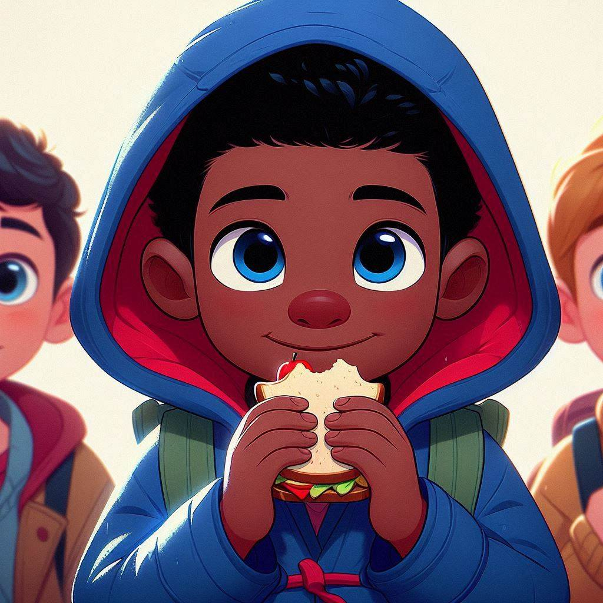

O Matheus é um personagem fictício da Turma do Ton caracterizado por ser o antagonista de Ton (Joceilton), tendo uma vida bem sucedia além de ser muito atraente para as garotas, ao ponto de roubar para sí Luana, a ex MN do Ton.
Sua primeira aparição foi em um episódio que mostra um sonho de Ton, onde ele estava no pátio da escola durante o intervalo, quando avistou um cara negro, com dentes grandes, camisa laranja e shorts verdes. Este cara era conhecido como Matheus e era muito popular para as meninas da escola. Luana, MN de Ton na época, era caidinha por Matheus, o que causava muito ciúmes nele. A partir daí, o Matheus se tornou uma lenda, um terror para o Ton e começou a ser ilustrado em desenhos feitos por Jone, Rafa e Bebê representando a rivalidade entre os dois.
Nas representações, além das vestes nas cores laranja e verde e de seus dentes grandes, Matheus usa óculos escuros (ray ban ou juliete), correntes de ouro no pescoço e possui um corte de cabelo arrasador (algumas vezes é caraterizado por ter um cabelo liso e usar topete). Ele também é rico e gosta de humilhar seu oponente Ton das mais variadas formas.
Principais Teorias e Lendas
Um detalhe curioso é que o Matheus toma para sí apenas a Luana. Não há nenhum registro oficial que represente o ele roubando outras MNs do Ton, como a Jaylane, a Kath, a Mocinha(Izabela), etc. Dessa forma, podemos concluir que o confronto entre Ton e Matheus se dá excluisvamente pelo desjo de conquistar Luana, e não por algum outro motivo pessoal.
Também é válido ressaltar que até o momento na Turma do Ton o Matheus só existiu na imaginação dos prsonagens, o que fez dele uma lenda e abriu portas para diversas teorias.
Uma delas, bastante defendida por psicólogos, é de que o Matheus, tal como conhecemos, na verdade representa apenas uma barreira emocional de Ton, que por causa de sua leve timidez para se relacionar com garotas, impede que ele inicie um namoro e ainda por cima, se sinta humilhado por si mesmo por não conseguir ficar com ninguém. O Matheus seria, portanto, como Ton gostaria de ser, contrapondo-se a quem ele realmente é.
Também existe a hipótese de que o Matheus ainda está por vir em um futuro bem próximo, como uma profecia. Ele está apenas aguardando o momento em que o Ton encontre o verdadeiro amor de sua vida e se case, para enfim se revelar.
E a última teoria, também muito apoiada, é de que o Ítalo, amigo e ex colega de Ton seja ou venha a se tornar o Matheus. De acordo com essa hipótese, Ton se apaixonaria por alguma garota (podendo ser até mesmo a Luana novamente), todavia Ítalo já estaria secretamente a fim dela e a partir daí a rivaliddade entre os dois amigos começaria. Ítalo então adotaria um pseudônimo e assim surgiria o Matheus.

Ítalo comendo um sanduíche, imagem gerada por IA
Dentre as evidências dessa última teoria podemos mencionar o fato de o ítalo ser negro e conhecer bem seu companheiro Ton, também ele já namorou a Mocinha (Izabela), que já foi uma MN do Ton, e ainda, assim como Ton tem um casaco vermelho com a parte interna do capuz na cor azul, ítalo tem um casaco azul, com a parte iterna do capuz vermelha, ou seja, uma pista de que ambos seriam antagonistas.